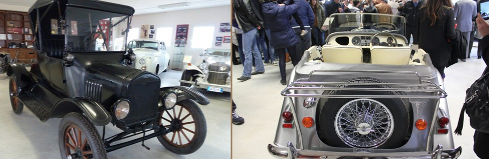

| Home | auto nel museo | dove siamo | chi siamo | iscrizione |
Presso il “Murgia Museum Proscia & Bruno” a Cassano delle Murge, Bari è possibile visionare un eccezionale museo auto d’epoca e pezzi di ricambio d’epoca.
Presso il museo si svolgono anche incontri e meeting con appassionati collezionisti di automobili, privati, enti pubblici.
Presso il museo è attivo un servizio di reperibilità di pezzi e ricambi originali di auto d’epoca.
“Murgia Museum Proscia & Bruno” offre anche un servizio di valutazione gratuita di auto d’epoca.
